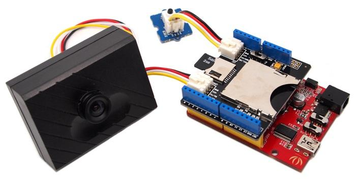

The Serial Camera is a JPEG color camera module easy for MCU use.It has integrated image processing DSP to generate 320*240 or 640*480 JPEG image without thumbnail information, Captured picture will be stored in internal buffer and transferred via UART port.
Model: SEN91224P

| Item | Min | Typical | Max | Unit |
|---|---|---|---|---|
| Operating Voltage | 4,8 | 5.0 | 5.3 | V |
| Resolution (default) | 640x480 / 320x240 | / | ||
| Default Baud rate of serial port | 115200 | Baud per second | ||
Step 1:Download dedicated serial port debugging tool VC0703COMTOOL.rar and install it.
Step 2: Connect Serial camera to PC with USB to use serial converter tool UartSBee
| Serial camera | Uart_SB v3.1 |
|---|---|
| GND (black) | GND |
| VCC (red) | VCC |
| RX (white) | TX |
| TX (Yellow) | RX |
Step 3: Connect the Uart_SB v3.1 with Computer and Open the vc0703CommTool software. Choose the correct COM number of the port you link to the camera, default baudrate 115200 ,and then open the port.
Step 4: Click the button "Get Version" and it will reset the camera.
Step 5: Click the button "Fbuf" to get ready to take a picture.
Step 1: Connected Grove - Serial Camera to Arduino board, Hardware parts include Seeeduino V3.0, SD Card Shield, SanDisk microSD™ Card 2GB, Grove - Button.

Step 2: Change the serial receive buffer(default 64 bytes) to 128 bytes.
Open up hardware/arduino/cores directory, and edit the file named wiring_serial.c or HardwareSerial.cpp near the top is a #define SERIAL_BUFFER_SIZE 64, which means 64 bytes are used for the buffer. You need to change this to 128 .More details, please refer to Arduino Hacks.
Step 3: Download the Grove - Serial Camera Library, upload it to Seeeduino. If it can't be complied, please confirm if the SD Library is in your Arduino IDE folder.
Step 4: Open the Serial Monitor , press the button to take picture after SD card and Camera initialization.
If you have questions or other better design ideas, you can go to our forum or wish to discuss.
Copyright (c) 2008-2016 Seeed Development Limited (www.seeedstudio.com / www.seeed.cc)